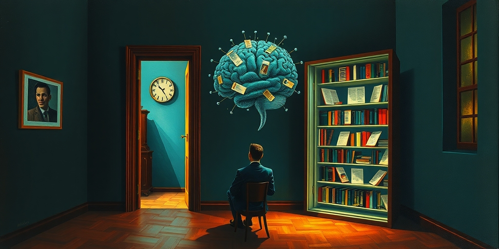
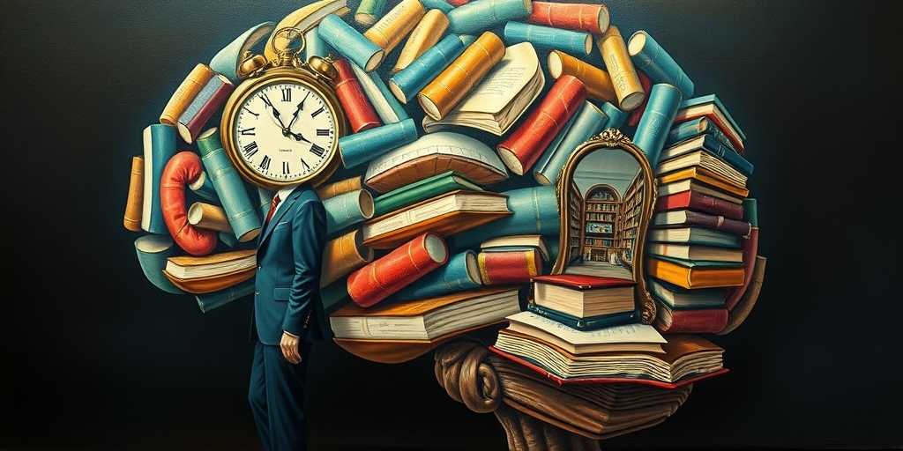

小汪老师的成长洞察 · 属于你的成长专栏
大语言模型没有眼睛，没有身体，没有摔过跤——仅仅靠阅读万亿字的长文，就长出了推理能力。这个发现让我后背发凉。如果语言本身就能建造智力，那一个人一生读了多少长文，就是在给大脑做多少个epoch的训练。长文阅读的消失，不是少了一种消遣，而是拆掉了社会思维的流水线。

我第一次意识到这件事，是在深夜读一篇LLM论文的时候。那个模型没有见过红色，没有被人骗过钱，没有童年。它唯一的输入是万亿token的语料——长文章、书籍、论文。在这个纯粹的符号流上，它学会了推理、归纳、类比。我盯着屏幕，后背发凉。
如果语言结构本身就能长出智力，那人脑会不会也是这样？不是“阅读帮助智力发展”这种温和的话，而是阅读本身就是智力的施工队。每一次读长文，追踪跨段落的逻辑链，在数千字里维持一致性，就是在给大脑做一次反向传播。长文阅读量，就是一个人的大脑训练集大小。
先看几组数字。美国23.6万成年人调查，任何一天会给孩子读书的人只占2%。不是不每天读，是任何一天都不读。1984年到2025年，13岁青少年中“很少”或“从不”因为兴趣阅读的比例从8%涨到29%。每三个孩子里就有一个觉得阅读与自己无关。
许多幼儿园老师发现，孩子连童谣和经典童话都没听过。这些是口语时代的叙事基础设施，它们被阅读的瓦解顺带抹掉了。高中生的焦点访谈里，多数人觉得“为了兴趣而阅读”是另一个世界的行为。哈佛大学一门社会学课上，学生抱怨阅读材料太深。一个学生用ChatGPT把1962年的《发条橙》翻译成简单语言，因为原作已经读不懂了。
最刺人的一句来自学生：“教授要求我们读书，只是人为设置障碍，把信息放进更困难的媒介里。”在他们眼里，阅读不是获取知识的方式，是教授故意为难人。

这些数据背后，有更深的认知史证据。神经心理学家卢里亚1930年代在乌兹别克斯坦偏远村庄做过一个实验。他给农民一个三段论：“所有远北方的熊都是白色的。新地岛在远北方。新地岛的熊是什么颜色？”识字的农民能完成推理。不识字的农民拒绝回答，说“我没去过北方，不能乱说”。他们不是不聪明，是思维工具不同。识字者学会了把命题从具体经验中剥离出来处理。
沃尔特·翁在《口语与文字》中判断：文字是人类所有发明中最深刻地改变意识的。印刷文化推崇篇幅长、结构严密的表达，这种表达不是把想好的东西写下来，而是通过写作过程来想。写作的慢不是缺陷，是核心价值——它强迫大脑反思、组织、修正。深度阅读就是这个慢过程的接收端。
尼尔·波兹曼在《娱乐至死》中说：“文字将语言冻结，正是在这一过程中，它催生了语法学家、逻辑学家、科学家——所有那些必须把语言摆在自己面前，才能看清它意味着什么的人。”三个人串起来：卢里亚证明识字创造逻辑能力，翁证明文字改变意识结构，波兹曼证明印刷文化催生了现代社会赖以运转的思维方式。
现在LLM补上了最后一块拼图。它没有感官，没有身体，没有非语言经验，仅仅处理大量结构复杂的语言，就产生了推理能力。这说明人脑的权重网络和LLM的权重网络，在底层原理上可能是同构的。阅读不是把知识装进大脑，阅读是在给大脑做梯度下降。每一次读长文，追踪逻辑链，维持远距离一致性，就是在更新大脑的连接权重。长文阅读量，就是大脑训练的epoch数。
那么反过来看：当一个社会的长文阅读量崩塌，它不是在变没文化，它是在经历一场大规模的认知去训练化。大脑的权重网络正从“处理复杂结构”退化到“处理短平信号”。这不是比喻。如果训练数据变成碎片，输出就不会有连贯推理。这跟LLM只用短文本训练就做不了复杂推理，是同一件事。
回到卢里亚那个三段论。不识字的农民不是不聪明，他们只是无法把命题从经验中剥离。当一个人一辈子只消费碎片化信息，他会变得非常善于反应——识别模式、快速判断、情绪响应。但他无法进行“如果所有A都是B，且C是A，那么C就是B”这种与自己经验无关的纯推理。
我们可能正在培养一整个不习惯长文的大脑代际。这意味着的，不是他们“读书少了”，而是他们的神经网络在一个更简单的训练集上收敛。我们不知道那个收敛点的思维上限会在哪里。就像训练一个LLM时，如果只喂给它短平快的语料，它永远学不会连贯论证。人脑也一样。
写给你的话
有些人会说，视频也能传递知识。但视频是预包装果汁，文字是手工榨汁。视频把意义直接灌给你，不需要你主动提取。而主动提取的过程，就是大脑做反向传播的过程。取消了这个过程，知识还在，但智力不在了。我们不是要回到印刷时代，但得想清楚，我们丢掉的是什么。
还有人会想，以后AI能替我们读长文，我们只需要问它。但如果你自己不读，你连问什么都不知道。提问的能力本身，就是深度阅读训练出来的。
小汪老师的成长洞察 · 属于你的成长专栏